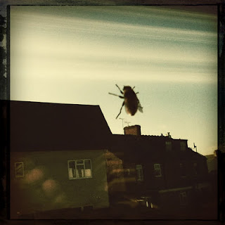

Saturday, January the 28th, 2012
back to: title, date or indexes
Over in his Inexplicable World, Outa_Spaceman tells us he has adopted a bee as a domestic pet. Curiously, he has not yet given it a name. I would ask all readers to head over to his postage right away and bombard him with suggestions. To assist you in choosing an apposite and beguiling bee name, here is a photograph of the little chap.
